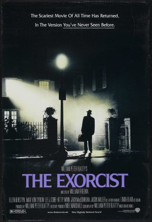
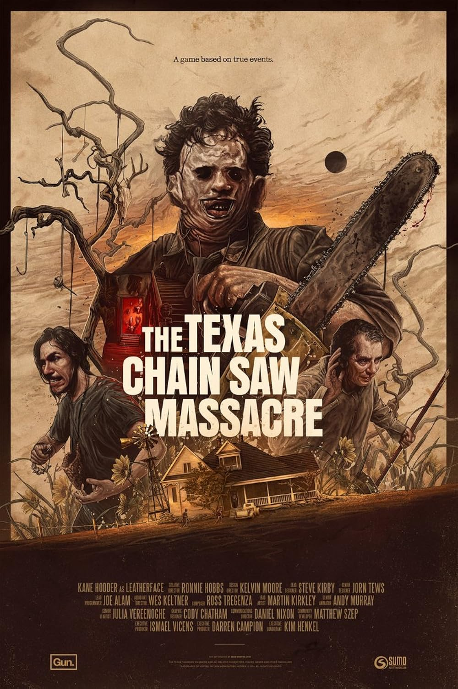
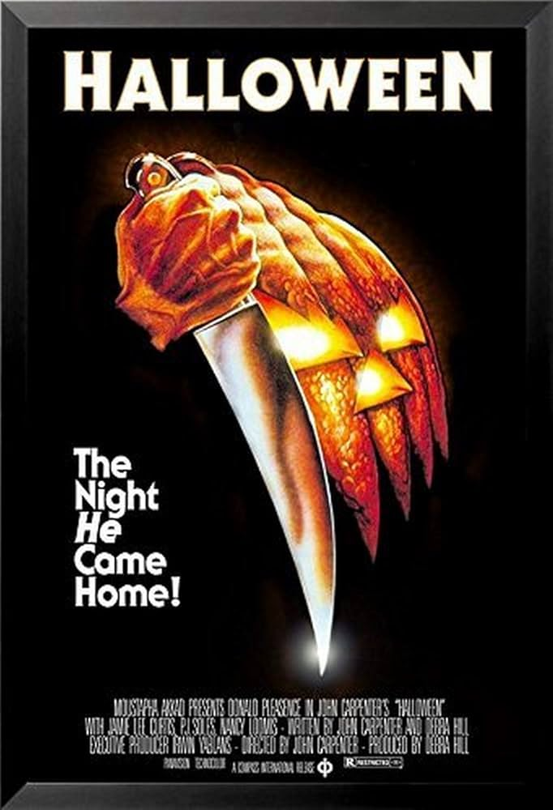
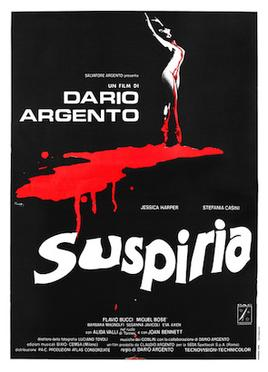

4 Clássicos dos Anos 70 que Ainda Assustam!
A década de 70 foi um divisor de águas para o cinema de terror, quebrando tabus e entregando obras cruas, psicológicas e, muitas vezes, brutalmente realistas. Prepare-se para uma viagem no tempo e descubra (ou revisite) 4 filmes que, mesmo décadas depois, provam que o medo não tem prazo de validade.




1. O Exorcista (1973)
Sinopse: A atriz Chris MacNeil (Ellen Burstyn) percebe que sua filha, Regan (Linda Blair), está agindo de forma estranha e violenta. Após exames médicos falharem em encontrar uma causa, ela recorre a dois padres, Damien Karras e Lankester Merrin, que concluem que Regan está possuída por uma entidade demoníaca. O filme é um mergulho visceral no horror religioso e psicológico, com cenas chocantes que ainda hoje causam calafrios.
Por que ainda assusta: Seu poder reside na atmosfera opressora, na crueza de suas cenas e na temática universal da fé versus o mal. É um terror que atinge o espectador em um nível profundo, sem depender de sustos fáceis.
2. O Massacre da Serra Elétrica (The Texas Chain Saw Massacre - 1974)
Sinopse: Um grupo de amigos em uma viagem de carro pelo Texas se depara com uma família de canibais sádicos e desequilibrados, incluindo o icônico Leatherface. O que se segue é uma perseguição brutal e aterrorizante, filmada com um estilo quase documental que amplifica o horror.
Por que ainda assusta: Sua atmosfera crua e perturbadora, a sensação de impotência das vítimas e a falta de explicação para a crueldade da família tornam-no um pesadelo visceral e sem escapatória.
3. Halloween (1978)
Sinopse: Quinze anos depois de assassinar sua irmã na noite de Halloween, Michael Myers escapa de um sanatório e retorna à sua cidade natal, Haddonfield, Illinois. Lá, ele persegue a babá Laurie Strode (Jamie Lee Curtis) e seus amigos. Dirigido por John Carpenter, é o filme que consolidou o gênero slasher.
Por que ainda assusta: A simplicidade eficaz do mal puro e imparável de Michael Myers, a trilha sonora icônica de Carpenter e a tensão crescente baseada na invisibilidade e na perseguição implacável.
4. Suspiria (1977)
Sinopse: A jovem bailarina americana Suzy Bannion (Jessica Harper) se matricula em uma prestigiosa academia de dança na Alemanha, mas logo descobre que a escola esconde segredos sinistros e está ligada a uma antiga e poderosa convenção de bruxas. O filme é um festim visual e sonoro, com cores vibrantes, música hipnótica e cenas de assassinato chocantes.
Por que ainda assusta: O terror não vem apenas da trama, mas da experiência sensorial. A estética onírica, a paleta de cores saturadas e a trilha sonora perturbadora da banda Goblin criam uma atmosfera de pesadelo febril.
Os anos 70 estabeleceram as bases para muito do que viria no terror. Mergulhe nessas obras e sinta na pele por que elas resistiram ao teste do tempo.